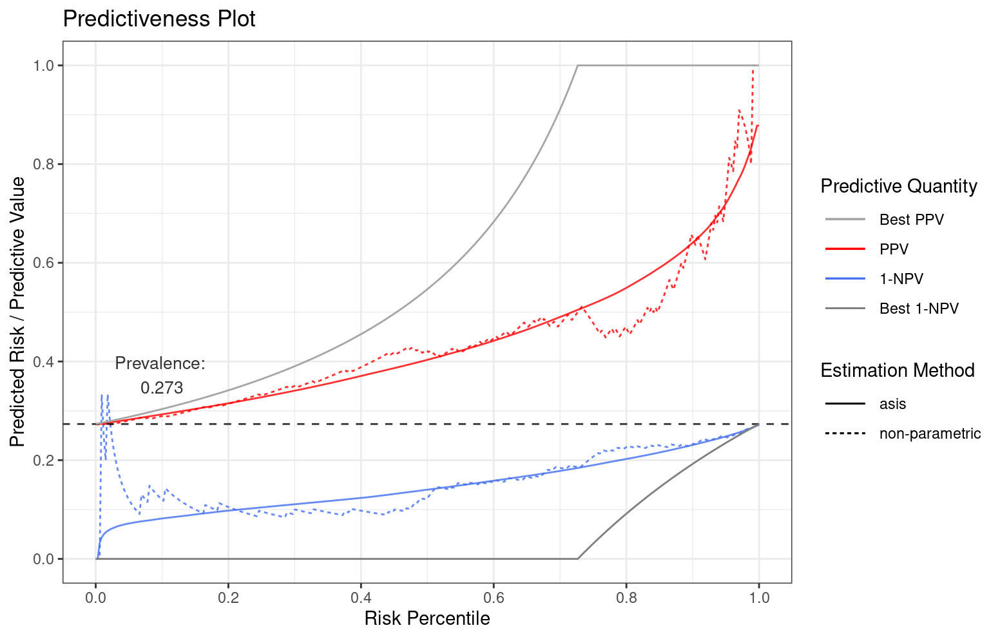

Performance evaluation for the prognostic value of predictive models intended to support personalized healthcare (phc) when the outcomes of interest are binary. Predictiveness curves are an insightful visualization to assess the inherent ability of such models to provide predictions to individual patients. Cumulative versions of predictiveness curves represent positive predictive values and 1 - negative predictive values and are also informative if the eventual goal is to use a cutoff for clinical decision making. In addition, predictiveness curves and their cumulative versions are naturally related to net benefit performance metrics to assess clinical utility for phc. Finally, some authors have proposed a visualization that assesses both the prognostic value of predictive models and their performance as a classifier. This package provides a variety of functions for estimation and plotting of these performance evaluation curves and metrics.
Installation
remotes::install_github(repo = "genentech/stats4phc")For reproducibility, refer to a specific version tag, for example
remotes::install_github(repo = "genentech/stats4phc", ref = "v0.1")Documentation
Please refer to https://genentech.github.io/stats4phc where you can see function reference as well as introduction vignette.
Example
This is a basic example which demonstrates riskProfile function (i.e. Predictiveness Curve):
library(stats4phc)
# Read in example data
auroc <- read.csv(system.file("extdata", "sample.csv", package = "stats4phc"))
rscore <- auroc$predicted_calibrated
truth <- as.numeric(auroc$actual)
# Default plot includes 1-NPV, PPV, and a predictiveness curve (PC)
p1 <- riskProfile(outcome = truth, score = rscore)
p1$plot
# You can also access the underlying data with `p1$data`
and sensSpec function (Sensitivity and Specificity Plot):
p2 <- sensSpec(outcome = truth, score = rscore)
p2$plot